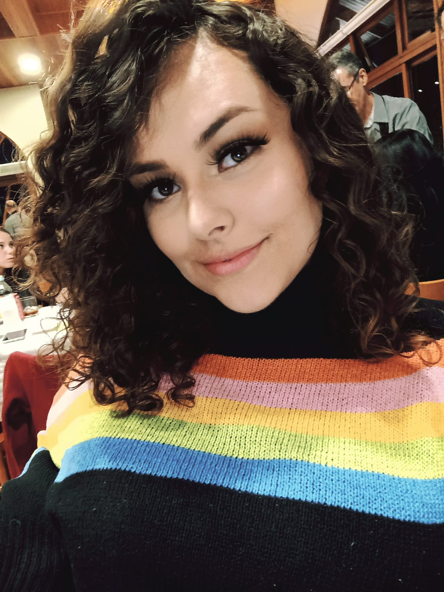
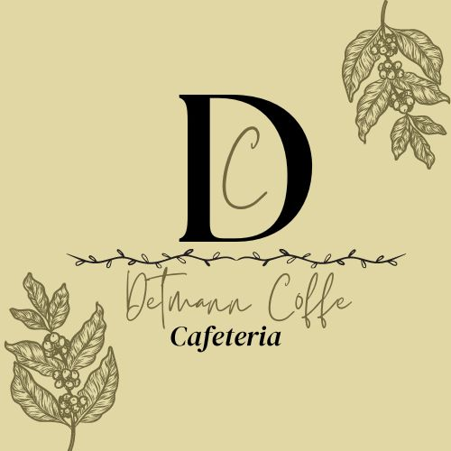
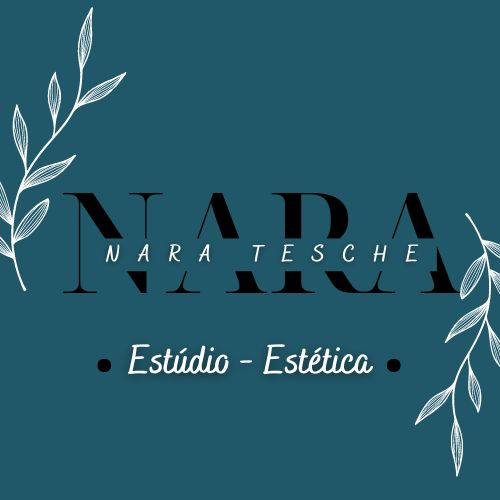

Amanda Dorneles
Web Designer
I work with love.
Sobre
Olá!
Sou Amanda Lisboa Dorneles, tenho 22 anos e sou uma estudante de design.
Já trabalhei em várias áreas diferentes, mas me encontrei no design UX - UI/ Gráfico.
Eu acredito que a criatividade pode ir além, transformar sonhos em uma logo, projetos em um app ou site... Mudar a perspectiva de alguém com tecnologia.
Espero poder te ajudar em seu desing, saiba que o meu principal objetivo é que o seu projeto tenha o seu estilo e que seja o começo de uma nova era na sua vida!
Capacidades
Web Design
Criação de logos
Criação e renovação de marcas
Photoshop
UX - UI
Eu acredito que a criatividade pode ir além, transformar sonhos em uma logo, projetos em um app ou site... Mudar a perspectiva de alguém com tecnologia.
Espero poder te ajudar em seu desing, saiba que o meu principal objetivo é que o seu projeto tenha o seu estilo e que seja o começo de uma nova era na sua vida!
Capacidades
Web Design
Criação de logos
Criação e renovação de marcas
Photoshop
UX - UI

Projetos

Estúdio de tatuagem
Nova marca, Identidade
Este projeto foi desenvolvido para ser uma logo de um estúdio de tatuagem no qual a cliente decidiu que o tema seriam aliens e espaço sideral.

Logo para uma cafeteria
Nova marca, minimalista
Cafeteria com um pedido de sofisticação e delicadeza, seguimos com a ideia do minimalismo e nome estilizado.

Panfleto para aniversário
Ilustração, Arte
Convite de aniversário com o tema de pizza.

Estilização de nova marca
Revitalização de marca
Proposta de revitalização de uma logo já existente, o objetivo da cliente era sofisticação e modernidade.

Nova logo para pizzaria delivery
Nova marca, Identidade
Projeto para a criação de uma logo para um delivery de pizza!

Panfleto para uma Massoterapeuta
Web Design
Panfleto criado para chamar a atenção dos clientes para uma sessão de Massoterapia!